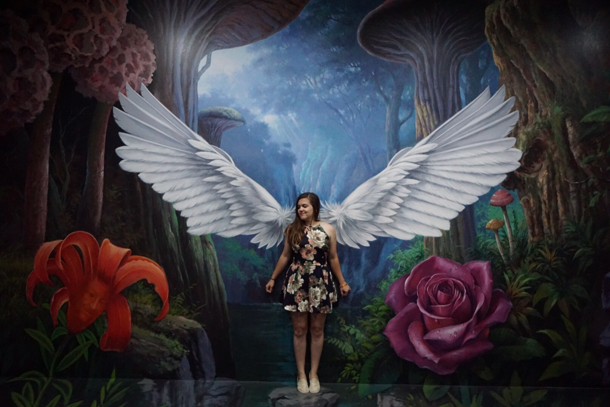

My Coding Journey
One Month
Posted: 02/20/18
When I think about the web… when it was invented… I begin to feel like a dinosaur, pilgrim, or pioneer of some sorts. Thank you, Sir Tim Berners-Lee, when you proposed this crazy “web” concept in 1989. Wait… 1989?? Yep. That’s when I start feeling like a dinosaur. I can’t wait to tell my hypothetical grandchildren that I grew up during the era of the internet, that “back in my day that there ‘world-wide web’ was invented.” It feels so common nature to search things on the web and I really can’t imagine my life without it. Is that sad? Meh. Send me a therapy email at a later time… for now let’s get to the point of this post.
*My Coding Journey*
Oo0o0o0o0
And to be quite frank with you, I’m pretty sure I am using the words coder/coding a little out of content, since I’m strictly referring to learning super basic web design/development, but for the sake of matching “Cs” (Christie—Coffee, Cats, and Coding), let’s roll with it.
New Year, New Me… (why I decided to learn to code)
Heh. Except the only problem when 2018 rolled in, I didn’t really have any new goals to set for this coming year. The only goal I set was to drink water every day… which is what normal human beings do… however, after I realized my pee literally smelt like coffee… I decided I needed to make a conscious effort in drinking water. Is that sad too? Jeeze, I’m on a roll here.
I used to love computer graphics and video production back in high school, spending hours editing items to make them look “perfect” (which if you check out any of my high school “masterpieces” (aye, YouTube… back when we had actual usernames) they were far from perfect). Point is, I’d spent most of my formative youth years creating embarrassing content of my adolescence for the web to see. I enjoyed it.
I didn’t end up going that career path at all. I ended up becoming a registered nurse. Which I love, and still identify as a public health nurse. I keep finding myself in public health roles that make my friends and family say, “you do what again?” Which is a whole other story.
So mid-January, I decided I wanted to learn to code websites as a hobby. Yes, yes, I wanted to spend hours on the computer coding HTML, CSS, and JavaScript to make websites look pretty. This was my idea of a fun new hobby. I never claimed to be the coolest cat, but to me it seemed fun. And I was right. I’ve enjoyed every second of it since.
How I Started…
Well… I typed in Google, “how to learn to code” or something along those lines. Which brought me up with numerous options on learning to code for free. For free you say? Yes. Free. The internet is an amazing place. I was messing around on a few of the websites to learn to code, but the learning style that resonated best with me was through CodeAcademy. I’d say I started with zero to minimal knowledge. If we count my Myspace days, I had some coding experience... My Myspace profile was always the coolest. Yes, I am bragging about Myspace. Okay, whatever, I started with zero knowledge. However, these websites offering free coding classes can take you from zero to hero. Just like that.
I ended up opting to pay for their program “Build Websites from Scratch”. What I liked the most was the hands-on projects they offered. I learn by doing. There was still quite a bit of trial and error when they’d set me free to try and replicate a webpage and build it from scratch myself… but I’ve never been more proud to create a fake tea shop or fake arts and craft store’s website before.
I didn’t realize the joy I’d experience by clicking “refresh” on my browser and seeing that the new code rule I had applied… actually worked. It may be very basic, but it was just such a cool experience to see that by bashing some letters and character on my keyboard, I could create a real working project (aka the webpage).
I think my biggest struggle during the course was understanding command line and git, but with the help of some more additional resources (thank you YouTube community for all your free how to code videos), I was able to wrap my head around the concept and now enjoy it too (it really does make creating files that much faster.) If you are interested in coding, and some of these words I just mentioned don’t make sense… don’t worry… they also didn’t mean anything to me prior to this year either.
In summary, the internet is an amazing place. The web offers many free resources in learning to code. The web can teach you about itself. Whoa.
How it continues…
I have not yet mastered HTML and CSS. However, I feel fairly confident enough to deploy my own webpages. Thus, as my coding journey has just stated… it will continue to… eh, continue (I can’t say “go on” because my mind instantly treks back to the Titanic). Which I love! It has only been like a month since I decided to pick up coding. I never expected to be an expert by now (or ever), but I’ve enjoyed the learning process and plan to keep on learning. I have now incorporated other leaning platforms, such as books. Maybe that is the dinosaur in me… but I noticed when I started to learn to code, I handwrote notes in a journal to further concrete those concepts in my mind. I like journal in general, but there is something about a paper copy that I find easier to read. Learning off the computer is great since… well… you code on the computer, but I read better off hard copy stuff. I also simply practice. What you are reading right now, this is all practice. It’s all in fun. So, whether you have read this “one-month coding journey” post because you’re one of my family members or friends (hey guys), an experienced coder come to judge and troll away, or a newbie like me… this is the backstory to my webpage Coffee, Cats, and Coding.